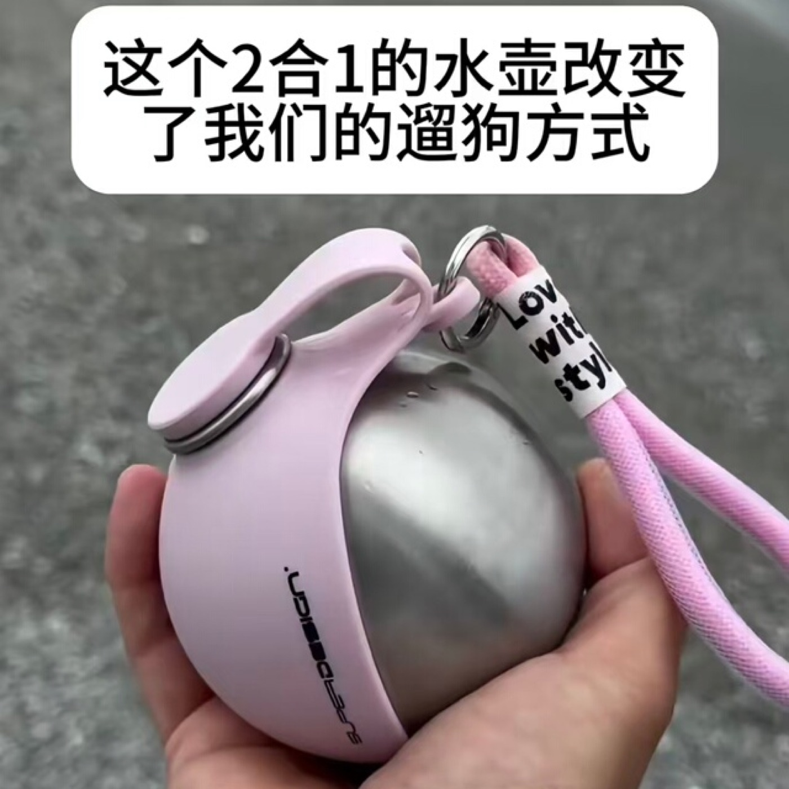

Teardown 01
狗狗的随行杯

用户
养宠物狗，日常户外遛狗的铲屎官；大多是短途城市遛狗，希望轻装出门
场景
户外城市遛狗途中，中途停下来给狗狗补水
当前方案痛点
需要单独携带水瓶 + 狗碗；喝不完的水无法回收，只能倒掉；两件物品容易遗失、手拿不方便
创意方案
储水不锈钢杯 + 可翻折硅胶碗集成一体；增加挂环挂绳模块
核心价值
减少携带物品数量，消除剩水浪费，降低随身收纳负担
方案短板与边界
硅胶褶皱容易藏污，清洗麻烦；容量不大，不适合长时间徒步；硅胶长期拉扯会老化 ；小狗合适，大狗量不一定够
底层设计思想
同一场景先后使用的两个独立工具集成，降低携带与物品切换成本
同思想延伸案例
- 带卷尺的美工刀：切割工具+测量工具集成，减少工具切换
- 带U盘的签字笔：书写+存储集成，商务场景减少随身物品
AI 机会迁移
用户在工作流里先后使用 A 工具、B 工具，需要复制粘贴导出数据 → 把两个工具能力集成在一个 AI 应用，消除跨工具切换成本